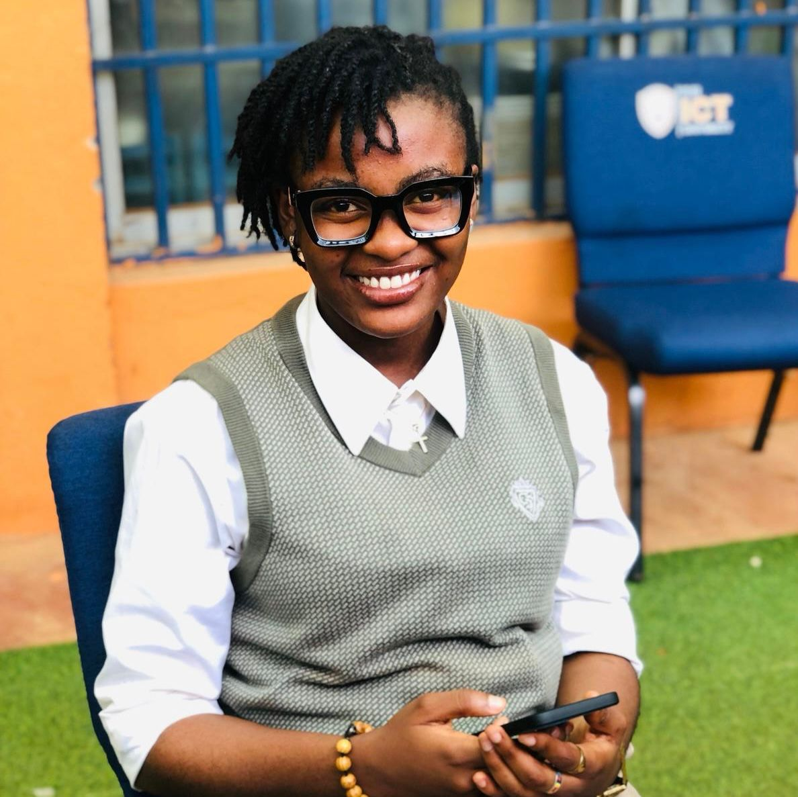

Cybersecurity Engineering • Secure Systems • Innovation
Passionate about secure systems, software development, and data protection. I build practical solutions that improve security and user experience.
Contact MeI’m a Cybersecurity student at ICT University, Yaoundé, currently in my 7th semester, with a passion for solving real-world problems through technology. Alongside my studies, I run my own cake business, which has shaped my creativity and entrepreneurial mindset. I’m continuously learning and growing in both tech and business.
The ICT University
BSc in Cybersecurity Engineering
2023 – Present
Cybersecurity Engineering Intern
Afriland First Bank
Dec 2025 – Feb 2026
Linux Certification
English (Fluent), French (Fluent)